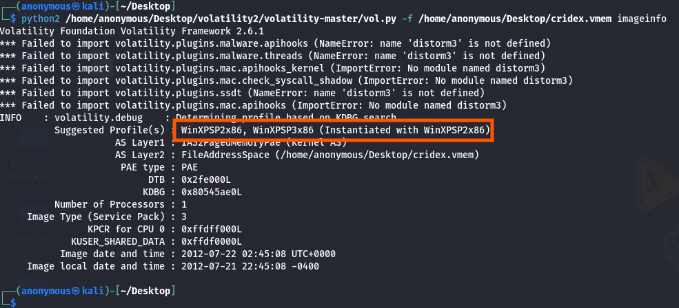
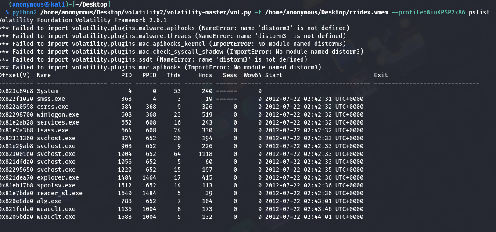
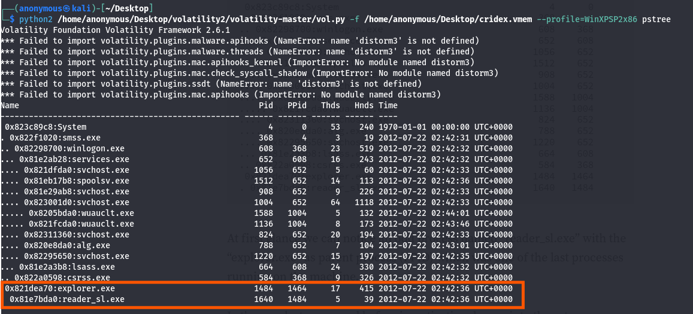
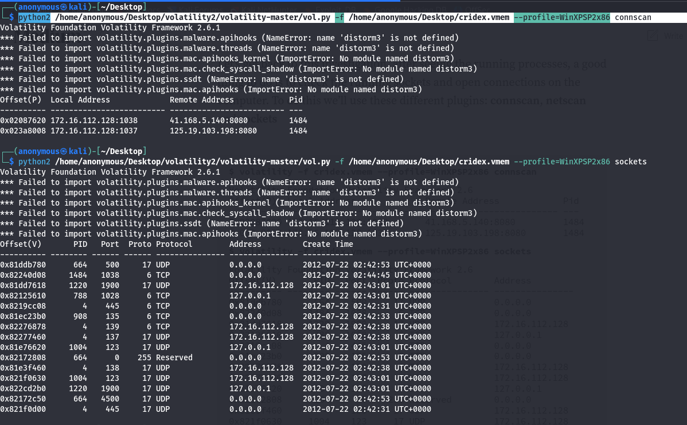
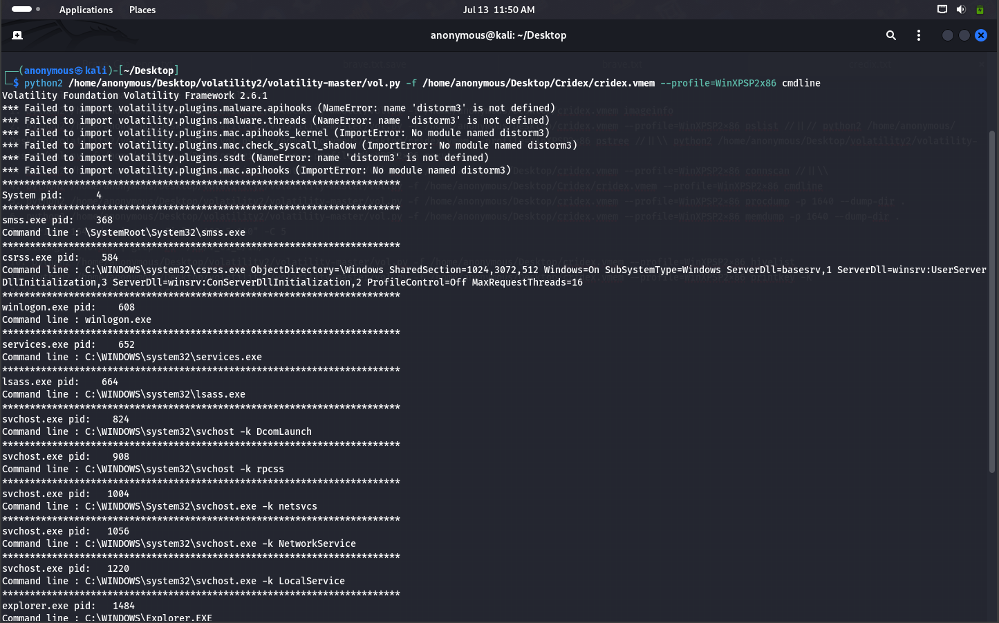
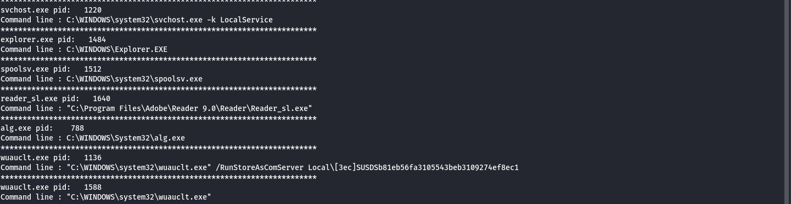
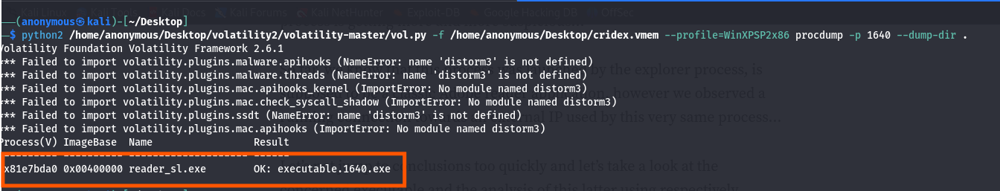
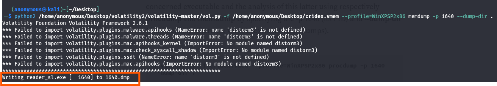

We will run several volatility commands in this tutorial using a simple case scenario:
the Cridex malware, ready? Let’s begin!
TOOLS:Volatility 3, CertUtil, HxD
Dump analysis
The very first command to run during a volatile memory analysis is: imageinfo, it will help you to get more information about the memory dump
the comand will be python2 /home/anonymous/Desktop/volatility2/volatility-master/vol.py -f /home/anonymous/Desktop/cridex.vmem imageinfo
With -f specifying your dump file and imageinfo the volatility plugin you want to use. You should obtain the following result:

We now have the computer OS from which this memory dump comes from (WinXPSP2x86). The investigation can now begin, we can specify to volatility the OS profile (--profile=WinXPSP2x86) and try to find what happened on the victim’s computer.
Let’s see what were the running processes using the pslist plugin.
python2 /home/anonymous/Desktop/volatility2/volatility-master/vol.py -f /home/anonymous/Desktop/cridex.vmem --profile=WinXPSP2x86 pslist

An alternative to the pslist plugin can be used to display the processes and their parent processes: pstree
python2 /home/anonymous/Desktop/volatility2/volatility-master/vol.py -f /home/anonymous/Desktop/cridex.vmem --profile=WinXPSP2x86 pstree

At first glance we can notice an odd process named “reader_sl.exe” with the “explorer.exe” as parent process (PPID) which was one of the last processes running on the machine.
Let’s run a last command before investigating deeper into these two processes. psxview will list processes that are trying to hide themselves while running on the computer, this plugin can be really useful.
python2 /home/anonymous/Desktop/volatility2/volatility-master/vol.py -f /home/anonymous/Desktop/cridex.vmem --profile=WinXPSP2x86 psxview
Well, except in our case ;) no processes seem to be hidden, if so you’ll see “False” in the first two columns (pslist and psscan).
Let’s get back to this investigation, after seeing the running processes, a good thing to do is to check the running sockets and open connections on the computer. To do this we’ll use these different plugins: connscan, netscan and sockets

python2 /home/anonymous/Desktop/volatility2/volatility-master/vol.py -f /home/anonymous/Desktop/cridex.vmem --profile=WinXPSP2x86 connscan
The connscan plugin is a scanner for TCP connections, while sockets will print a list of open sockets and finally netscan (which cannot be used in our example due to the profile used) will scan a Vista (or later) image for connections and sockets.
In our scenario, two TCP connections are used by the process with PID 1484 (by looking at our command history outputs we can easily link the PID 1484 to the process explorer.exe). We can see that one of this TCP connection is still open, the one using port 1038 and communicating with the destination IP address 41.168.5.140.
Let’s now take a look at the last commands ran, by using cmdscan, consoles and cmdline plugins.
The question need us to understand more about process called wscript.exe and not just to know the process id but to also know what this process wscript.exe has open other process once it was open in windows 7. We can use the same plugin as in third question but we can do better by using pstree as it shows clearly.
To find the child process of wscript.exe, we use the plugin pstree with the command python2 /home/anonymous/Desktop/volatility2/volatility-master/vol.py -f /home/anonymous/Desktop/cridex.vmem --profile=WinXPSP2x86 cmdline


The first two plugins: consoles (which extracts command history by scanning for _CONSOLE_INFORMATION) and cmdscan (which extracts command history by scanning for _COMMAND_HISTORY) did not contain any information in their buffers.
However, the cmdline plugin which display process command-line arguments did give us interesting information. Indeed, we now have the full path of the processes launched with PID 1484 and 1640. The “Reader_sl.exe” process is getting more and more suspicious…
So far, we know that this process was launched by the explorer process, is supposed to be a classic Adobe reader application, however we observed a running connection towards an external IP used by this very same process…
Let’s not jump to conclusions too quickly and let’s take a look at the concerned executable and the analysis of this latter using respectively procdump and memdump by specifying the -p 1640 (its PID) and --dump-dir (the directory where we want to extract theses dumps).

python2 /home/anonymous/Desktop/volatility2/volatility-master/vol.py -f /home/anonymous/Desktop/cridex.vmem --profile=WinXPSP2x86 procdump -p 1640 --dump-dir .

python2 /home/anonymous/Desktop/volatility2/volatility-master/vol.py -f /home/anonymous/Desktop/cridex.vmem --profile=WinXPSP2x86 memdump -p 1640 --dump-dir .
We can try to use connscan, connections,sockscan. but here we can use net scan as it works and try to focus to applications that have established network to outside.
We use the plugin netscan with the command python2 volatility/vol.py -f /home/anonymous/Desktop/Dumpme\Volatility2/Triage-Memory-001.mem netscan.

The first established network in the analysis is UWkpjFjDzM.exe, confirming the process is suspicious.
Therefore, the answer is 10.0.0.101.
Sixth question: Based on the answer regarding the infected PID, can you determine the IP of the attacker?
The IP address of the remote from our previous screenshot is 10.0.0.106.
The answer is 10.0.0.106.
Seventh question: How many processes are associated with VCRUNTIME140.dll?
We can use plugin dlllist to see what process the dll is interact with and grep that |grep VCRUNTIME140.dll to get how many processes that dll interact
We use the plugin dlllist to see the processes interacting with the DLL and grep that with |grep VCRUNTIME140.dll using the command python2 volatility/vol.py -f /home/anonymous/Desktop/Dumpme\Volatility2/Triage-Memory-001.mem –profile=Win7SP1x64 dlllist|grep VCRUNTIME140.dll.

Our answer is 5 processes.
Eighth question: After dumping the infected process, what is its MD5 hash?
We know our infected process is UWkpjFjDzM.exe then we need to know process id of that infected process and we can use the plugin pstree
We know our infected process is UWkpjFjDzM.exe with PID 3496. We dump the process with the plugin procdump using the command python2 volatility/vol.py -f /home/anonymous/Desktop/Dumpme\Volatility2/Triage-Memory-001.mem --profile=Win7SP1x64 procdump --dump-dir=/home/anonymous/Desktop/ 3496.

We get our dumped file in our desktop directory named executable.3496.exe, and calculate its MD5 hash using the md5sum tool: md5sum executable.3496.exe.

Our answer is 690ea20bc3bdfb328e23005d9a80c290.
Ninth question: What is the LM hash of Bob's account?
In this question, it wants us find LM hash. In here, we can use plugin called hashdump to dump hashes. The command will be “python2 “/home/anonymous/Desktop/New Folder/volatility/vol.py” –f “/home/anonymous/Desktop/New Folder/triage-Memory.mem” –profile=Win7SP1x64 hashdump”.

Now we can see two hashes, first hash from left side is LM hash and second hash is password hash. Then our LM hash of Bob is aad3b435b51404eeaad3b435b51404ee.
Tenth question: What memory protection constants does the VAD node at 0xfffffa800577ba10 have?
VAD is used by the Windows memory manager to describe memory ranges used by a process as they are allocated. When a process allocates memory with VirutalAlloc, the memory manager creates an entry in the VAD tree. Plugin that we can use is ladino.
Command “python2 “/home/anonymous/Desktop/New Folder/triage-Memory.mem” –profile=Win7SP1x64 vadinfo|grep 0xfffffa800577ba10 -C 4”.

Now we can see protection is PAGE_READONLY.
Eleventh question:What memory protection did the VAD starting at 0x00000000033c0000 and ending at 0x00000000033dffff have?
We utilize the plugin console and the execution process for commands with the command “python2 “/home/anonymous/Desktop/New Folder/triage-Memory.mem” –profile=Win7SP1x64 vadinfo|grep ‘0x00000000033c0000 End 0x00000000033dffff’ -C 4.

Our permission now is PAGE_NOACCESS.
Twelfth question: There was a VBS script that ran on the machine. What is the name of the script? (submit without file extension)
Run on the machine meaning that we should check the one that execute in a certain command with path. the plugin cmdline is useful in this situation
command “python2 “/home/anonymous/Desktop/New Folder/triage-Memory.mem” –profile=Win7SP1x64 cmdline|grep -i vbs -B 2.

Name of script is vhjReUDEuumrX.
Thirteenth question:An application was run at 2019-03-07 23:06:58 UTC. What is the name of the program? (Include extension)
we can try the application using cmdline and consoles which fails.
CMDLINE: it fails because the program was closed and also they specified the word ‘was’
CONSOLES: It fails because the program was not only closed but the history of command for that process does not exist and maybe they turn off PC so i wont exist
We use the plugin malfind and associate processes with malware. Then, processes with |grep Zeus using the command python2 volatility/vol.py -f /home/anonymous/Desktop/Dumpme\Volatility2/Triage-Memory-001.mem –profile=Win7SP1x64 malfind | grep Zeus.

Name of script is Skype.exe.
Fourteenth question:What was written in notepad.exe at the time when the memory dump was captured?
we know pid process of notepad as we already done and it is 3032. command “ python2 “/home/anonymous/Desktop/New Folder/triage-Memory.mem” –profile=Win7SP1x64 memdump -p3032 — dump-dir .”.

Our Flag is flag REDBULL_IS_LIFE.
Fifteenth question:What is the short name of the file at file record 59045?
For file record, we can use plugin called mftparser to do the job. Comand “python2 “/home/anonymous/Desktop/New Folder/triage-Memory.mem” –profile=Win7SP1x64 mftparser|grep 59045 -C 20”.

Our answer is EMPLOY~1.XLS.
Sixteenth question:This box was exploited and is running meterpreter. What was the infected PID?
we already did this one. command command: “python2 volatility/vol.py –f /home/anonymous/Desktop/Dumpme\Volatility2/Triage-Memory.-001.mem pslist”.

Suscioup process was UWkpjFjDzM.exe
then our pid is 3496.